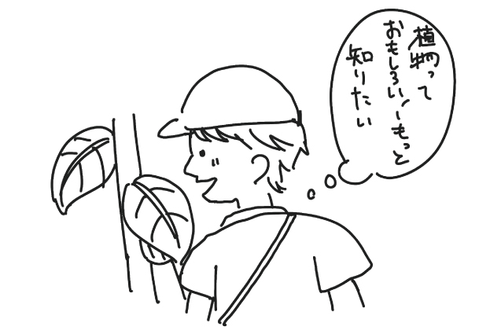
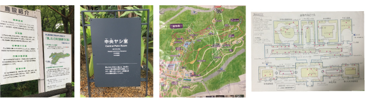
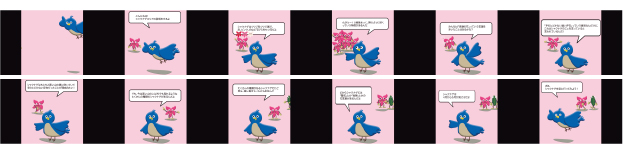
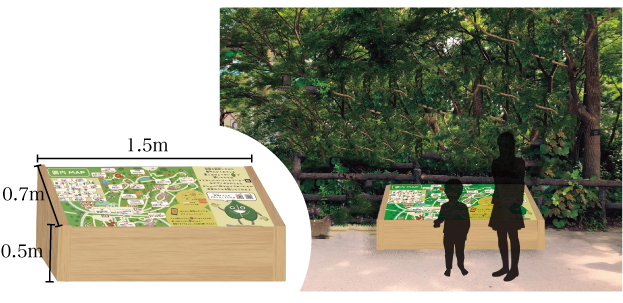
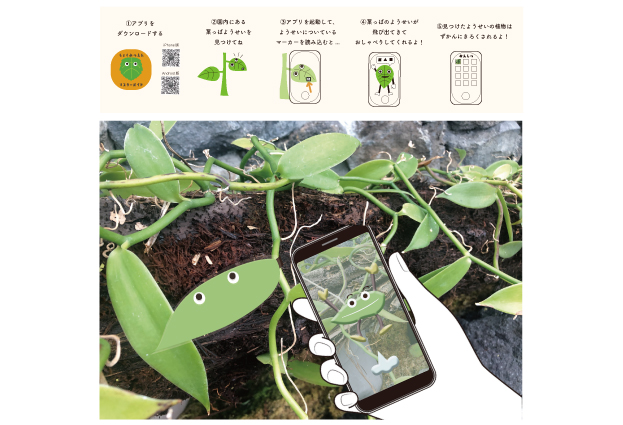
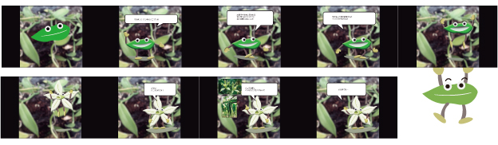
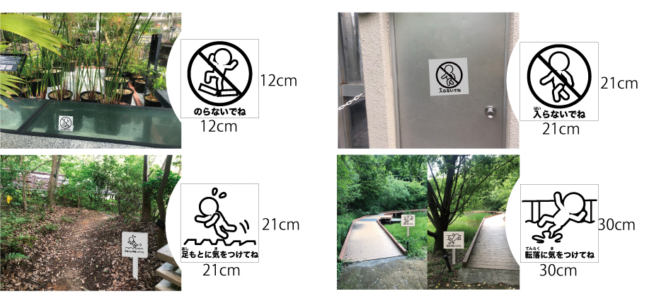

東山植物園の現状問題を解決するサイン計画です。
【ペアワーク】
◴ 2021/4/21-2021/6/4
✎ Illustrator Photoshop AfterEffect
東山植物園のユーザー調査
植物園のユーザーは平日にはリピーターの高齢者が多いが、晴れた休日には親子連れが多い。 調査によるとこれは動物園に遊びに来たついでに植物園に寄ったり、温室リニューアルをきっかけに散歩しに来た問い人たちでした。
新規ユーザーにも植物園の魅力を伝えたい！
ターゲット→親子連れに決定
どんな価値を与えたいか
「動物園のついでに植物園に来た」など軽い気持ちで訪れたユーザーにも植物について面白い知識を知ってもらい、植物を楽しく学んでほしい！
動物園だけでなく植物園でも家族の楽しい思い出の時間を過ごしてもらいたい！
東山植物園の現状
現在の植物園には年齢層高めでかつ植物に詳しいリピーターが多い。 そのため園内のサインは簡素で説明的なデザインであり、植物園にあまり来たことのない人には理解しづらいデザインでした。
植物園に来たことのない親子連れにもわかりやすく、子供が植物について楽しく学べるデザインにしよう！
アプローチ方法
・スマホネイティブ世代の子供に合わせて植物の説明サインやエリアの説明サインをARを使ったインタラクションのあるサインにする
・ARコンテンツを用いて植物園が子供でも親しみやすくなるように「植物のようせい」というキャラクターを設定する
園内マップ、植物の説明サイン、誘導サイン、注意サイン を作成
園内マップ
紙マップ
エントランスマップに掲載する情報に加え、エリアの豆知識動画が見れるARマーカーを掲載します。
マップ内ピクトグラム

紙マップARコードから視聴できる動画 (ex:シャクナゲエリア)
エントランスマップ
ターゲットに合わせた低い視点の台で紙マップに比べ少なめの短時間で理解しやすい情報量を掲載します。

説明サイン
スマホネイティブ世代に合わせたARを使ったサインです。植物の妖精が登場し植物の説明をしてくれます。
説明サインARコードから視聴できる動画 (ex:バニラ)
誘導サイン
マップと同じイラストを載せ、位置を確認できるようにしています。 温室は混雑を防ぐため一方通行の誘導サインを用意し、ARで写すと植物の妖精が出てくる隠しコマンド的要素があります。
注意サイン
足元の悪い道や立ち入り禁止の場所に設置する看板です。 子供に伝わりやすいコミカルなデザインにしています。
